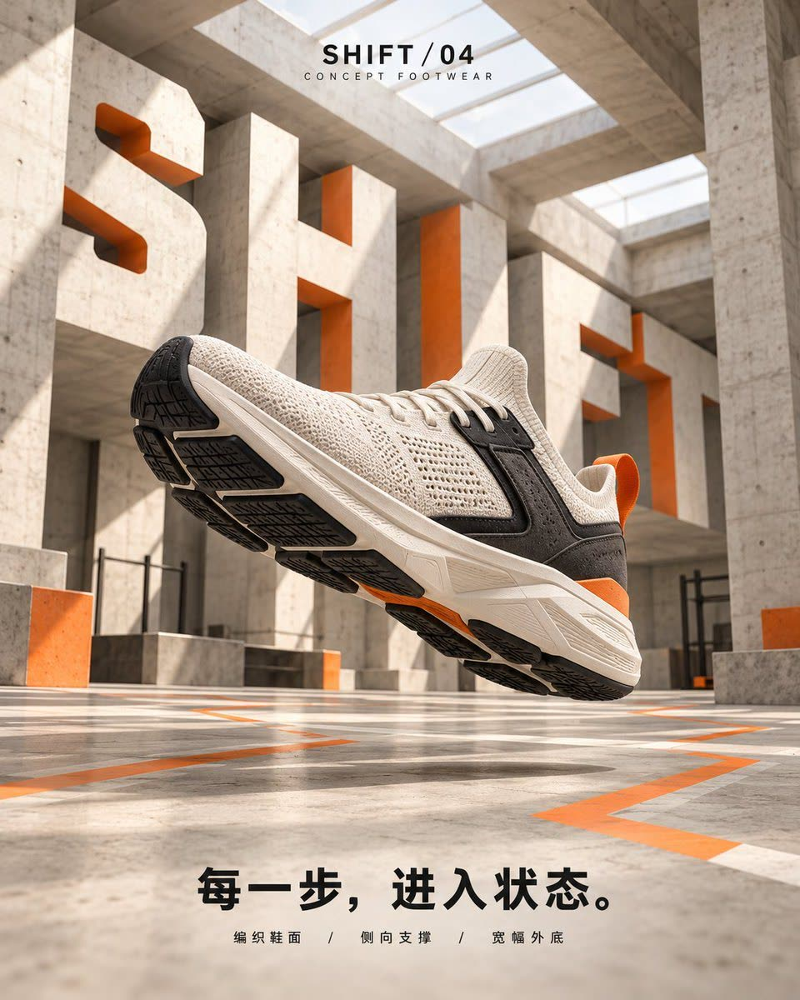

GPT-2 Sneaker Ad Poster Prompt
PRP-010Prop stylingGPT Image 2by 蛋黄堡October 15

A prompt for generating modern sneaker advertising posters with specific scene-based performance visuals and typography integration using GPT Image 2.
Prompt
Create a modern sneaker promotional poster featuring a [shoe type] with [shoe appearance] as the main foreground visual. Use a fixed visual system of warm white, graphite black, and burning orange. Realistic commercial product photography with clear details of fabric, foam, rubber, and unified lighting. The shoe is complete and occupies about half of the frame; the scene serves the shoe's purpose. Execute corresponding scenes based on [shoe type]: Road Running Shoes: Early morning city elevated track, low-angle three-quarter view, toe pointing upper right; ground lines converge into the distance, combined with moderate motion blur to express propulsion. Trail Shoes: Rock layers, forest slopes, and cold gray sky, wide angle close to the ground side-front; deep-toothed sole crosses gravel, kicking up a little dust, burning orange path climbs along the slope. City Training Shoes: Warm white concrete training space, skylights and side light, low-angle upward shot, toe pointing upper left; short orange folded lines around the sole to express turning and stable support. Integrate large [English action words] into the selected environment: Road models become perspective-thick track components; Trail models are embedded in cut rock layers; Training models fold along walls, columns, and floors. The font uses warm white front faces and burning orange cuts, with realistic occlusion, thickness, and shadows, maintaining recognizability. Place [Product Name] and "CONCEPT FOOTWEAR" at the top; place [Slogan] and [Structure Labels] at the bottom. Small text should be concise and clear, using modern sans-serif fonts, ensuring hierarchy between product, spatial title, and auxiliary information. Output only one independent poster each time. Avoid real brand logos, people, fictional performance numbers, irrelevant text, shoe deformities, plastic textures, and excessive decoration.
Tags: product